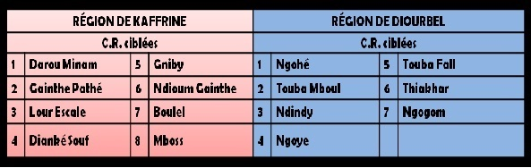
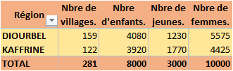
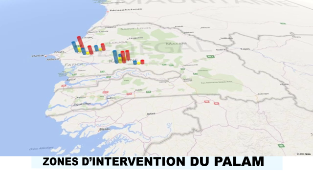

Le choix des régions s’est effectué sur la base du croisement de la carte de pauvreté avec celle de l’analphabétisme et de la scolarisation. Les régions retenues étaient Kaolack (avant l’érection du département de Kaffrine en région signalé comme étant le plus pauvre des autres départements de Kaolack) et Diourbel qui sont caractérisées par :
- l’acuité de la pauvreté,
- un taux brut de scolarisation bas,
- un fort taux d’analphabétisme (55 et 54% respectivement à Diourbel et Kaolack pour un taux d’analphabétisme de 59% national au niveau national),
- la faiblesse de l’intervention des partenaires techniques et financiers comparativement à d’autres régions.
L’affinement de ces critères a permis de sélectionner quinze (15) communes dans les régions de Kaffrine et de Diourbel (voir tableau ci-dessous)
Le même processus a conduit, suite à l’étude du Milieu, à élaborer la situation de référence de ces communes et aboutir à la sélection des 281 villages dont 122 à Kaffrine et 159 à Diourbel
Tableau de répartition des villages et des bénéficiaires par composante et par région
  
Merci d'activer votre connexion internet pour avoir les dernières informations.